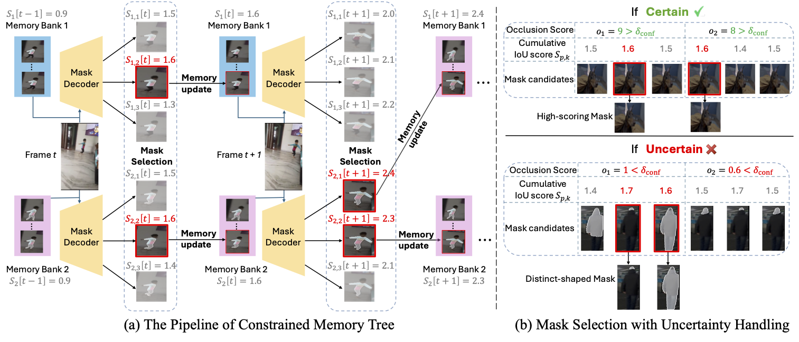
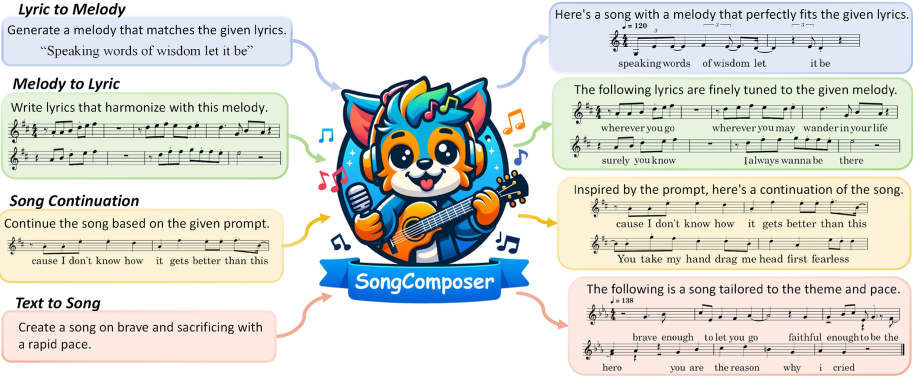
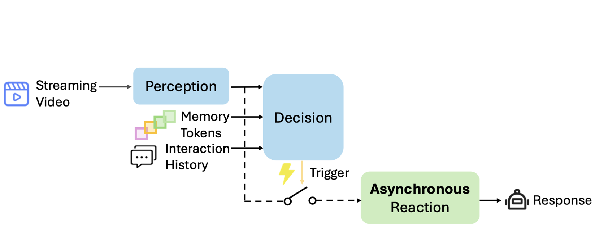
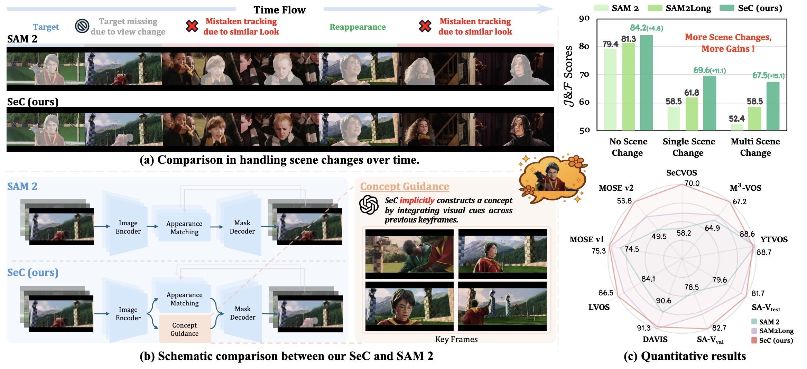

WildClawBench surpassed 500 GitHub stars and 80K Hugging Face downloads, and was used as an evaluation benchmark in the model release posts for Hunyuan Hy3, Seed2.1, and Muse Glimmer.
CUHK MMLab · Meta Superintelligence Labs
Video foundation models, grounded multimodal agents, and real-world AI evaluation.
I am a final-year Ph.D. candidate at CUHK MMLab, advised by Prof. Dahua Lin. My research centers on vision-language models, multimodal agents, and long-horizon agent evaluation.
I am currently a Research Scientist Intern at Meta Superintelligence Labs, working on video grounding with Jie Lei. Previously, I worked on SAM3 with Nicolas Carion at Meta and on multimodal LLMs at Shanghai AI Laboratory with Xiaoyi Dong and Jiaqi Wang.
On the job market — open to Research Scientist opportunities in multimodal AI, video VLMs, and agent evaluation.
2,797
Google Scholar citations
20
h-index
10
first / co-first author papers
ICLR · CVPR · ICCV
plus NeurIPS, ICML, ECCV, ACL
Citation snapshot: August 12, 2026.
News
Latest updates
SAM3 surpassed 18M Hugging Face downloads and 11.2K GitHub stars, with 880 Google Scholar citations.
SetCon is online, introducing set-level concept prediction for open-ended referring segmentation.
Three papers accepted at ICLR 2026: SAM3, SeC, and ScaleCap.
Released SAM3 for concept-level detection, segmentation, and tracking in images and videos.
Keynote talk at the ICCV 2025 LSVOS Workshop in Honolulu, Hawaii.
Publications
Selected papers
* equal contribution · † project lead





Selected earlier work
Streaming Long Video Understanding with LLMs · NeurIPS 2024 / Betrayed by Attention · ECCV 2024 / STA · ICCV 2023 / DCLR · ACM MM 2022 / FAME · CVPR 2022 / Practical Attacks on GNNs · NeurIPS 2020.
Background
Experience and education

Meta Superintelligence Labs, Bellevue
Research Scientist Intern on vision-language models for video grounding, supervised by Jie Lei.
Meta Superintelligence Labs, London
Research Scientist Intern on SAM3: Segment Anything with Concepts, focusing on multimodal interactivity and video grounding; supervised by Nicolas Carion.
The Chinese University of Hong Kong
Ph.D. in Information Engineering at MMLab, advised by Prof. Dahua Lin.
Shanghai AI Laboratory
Worked on LLMs and advanced video understanding with Xiaoyi Dong and Jiaqi Wang.

Shanghai Jiao Tong University
M.S. in Information and Communication Engineering. Graduate National Scholarship awardee.

University of Michigan
B.S.E. in Computer Science. Summa Cum Laude; GPA: 3.9/4.0.
Shanghai Jiao Tong University
B.S.E. in Electrical and Computer Engineering. National Scholarship Awardee; GPA: 3.8/4.0.
Honors
Selected awards
- CUHK Vice-Chancellor's Ph.D. Scholarship, 80,000 HKD, 2023
- Graduate National Scholarship, Top 2%, 2022
- Shanghai Outstanding Graduate, Top 5%, 2021
- Mathematical Contest in Modeling Finalist, Top 0.3%, 2019
- Undergraduate National Scholarship, Top 2%, 2018
Talks and service
Community
- Keynote Speaker, ICCV 2025 LSVOS Workshop: From Pixels to Meaning.
- Invited Speaker, InternLM Community Open Mic: When Songwriting Meets Large Models.
- Reviewer: CVPR, ICCV, ECCV, NeurIPS, ICLR, ICML, AAAI, ACL, ACM MM.